Workshop Manual ➭ TRANSMISSION/TRANSAXLE ➭ AUTOMATIC TRANSMISSION[SJ6A-EL] ➭ AUTOMATIC TRANSMISSION REMOVAL/INSTALLATION [SJ6A-EL]
AUTOMATIC TRANSMISSION REMOVAL/INSTALLATION [SJ6A-EL]
id051311249200
-
Disconnect the negative battery cable. (See BATTERY REMOVAL/INSTALLATION [L8, LF].)
-
Drain the ATF. (See AUTOMATIC TRANSMISSION FLUID (ATF) REPLACEMENT [SJ6A-EL].)
-
Loosen the starter installation bolts only enough that the starter is loose, but not removed. (See STARTER REMOVAL/INSTALLATION [L8, LF].)
-
Add ATF and, with the engine idling, inspect the ATF level and inspect for leakage. (See AUTOMATIC TRANSMISSION FLUID (ATF) LEVEL ADJUSTMENT [SJ6A-EL].)
-
Inspect selector lever operation. (See SELECTOR LEVER INSPECTION.)
-
Perform the mechanical system test. (See MECHANICAL SYSTEM TEST [SJ6A-EL].)
- Perform the road test. (See ROAD TEST [SJ6A-EL].)
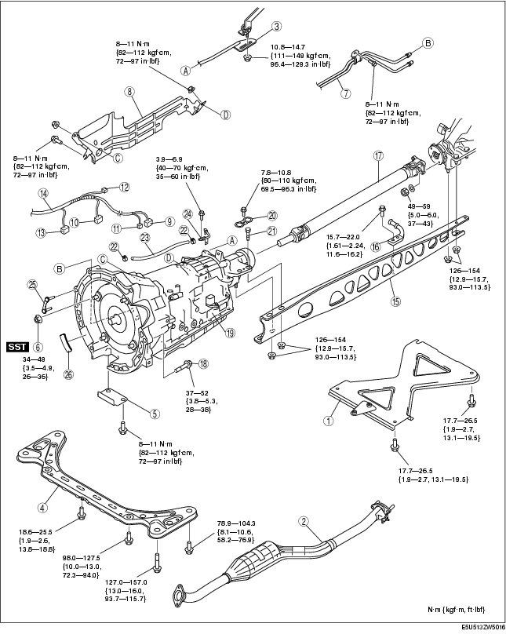
|
Middle pipe (See EXHAUST SYSTEM REMOVAL/INSTALLATION [L8, LF].) |
|
|
Manual shaft lever component (See Manual Shaft Lever Component Removal Note.) (See Manual Shaft Lever Component Installation Note.) |
|
|
Torque converter installation nuts (See Torque Converter Installation Nuts Removal Note.) (See Torque Converter Installation Nuts Installation Note.) |
|
|
Oil pipe, oil hose (See OIL COOLER REMOVAL/INSTALLATION [SJ6A-EL].) |
|
|
Power plant frame (See Power Plant Frame Removal Note.) (See Power Plant Frame Installation Note.) |
|
|
Propeller shaft (See Propeller Shaft Removal Note.) (See PROPELLER SHAFT REMOVAL/INSTALLATION.) |
|
|
Transmission (See Transmission Removal Note.) (See Transmission Installation Note.) |
|
Manual Shaft Lever Component Removal Note
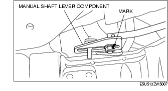
Torque Converter Installation Nuts Removal Note
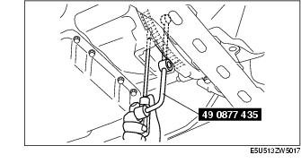
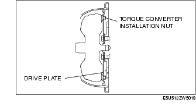
Power Plant Frame Removal Note
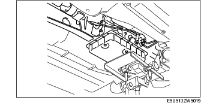
Propeller Shaft Removal Note
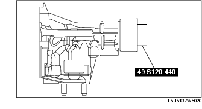
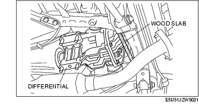
Transmission Removal Note
• Verify that the transmission is securely supported by the jack. If the transmission falls, serious injury or death and damage to the vehicle could result. Before removing the transmission make sure that the jack is securely supporting the transmission.
• To prevent the torque converter and transmission from separating, remove the transmission without tilting it toward the torque converter.

Transmission Installation Note
• Verify that the transmission is securely supported by the jack. If the transmission falls, serious injury or death and damage to the vehicle could result. Before removing the transmission make sure that the jack is securely supporting the transmission.
• To prevent the torque converter and transmission from separating, remove the transmission without tilting it toward the torque converter

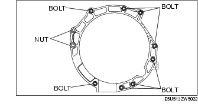
37-52 N·m {3.8-5.3 kgf·m, 28-38 ft·lbf}
Power Plant Frame Installation Note
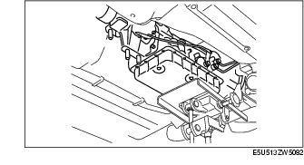
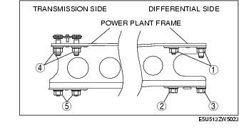
-
Tighten nut 2 until the power plant frame is seated in the rear differential.
-
Temporarily tighten the nuts 4, 5 in order shown in the figure.
-
Raise the front end of the power plant frame (transmission side) or the transmission with the transmission jack, and adjust dimension A to 26.7-34.7 mm {1.06-1.36 in} (lower surface of power plant frame-upper surface of the tunnel member) as shown in the figure.
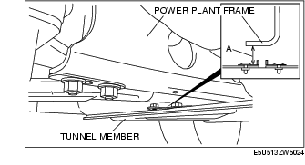
126-154 N·m {12.9-15.7 kgf·m, 93.0-113.5 ft·lbf}
- Verify that dimension A is within the specification with the transmission jack and the adjustment bolt removed.
• If not within the specification, adjust dimension A again.
Torque Converter Installation Nuts Installation Note
• Loosely and equally tighten the torque converter nuts, then further tighten them to the specified tightening torque.
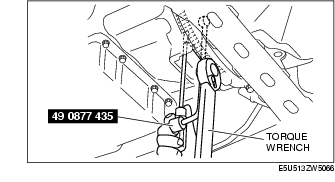
34-49 N·m {3.5-4.9 kgf·m, 26-36 ft·lbf}
Manual Shaft Lever Component Installation Note